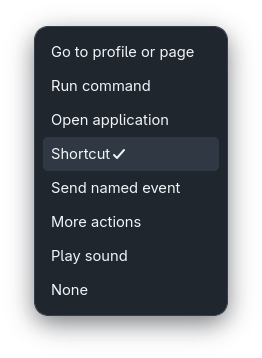
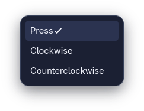

Your Stream Deck +, native on Linux.
sdeck-plus is a GTK4 control desk for the Elgato Stream Deck + (Stream Deck Plus). Configure its eight keys, four dials and touch strip, organize profiles, pages and folders, show live information, route audio, style button text and drive OBS Studio.
This project is still under construction. Developed and tested on Arch Linux with Hyprland.

Every control
8 keys, 4 dials with press and rotation, and touch-strip tap, hold, flick and swipes.
Profiles
Profile tabs with pages and folders, switched automatically by the focused application.
Artwork and text
Images for keys, the strip and touch zones, plus styled text drawn on each key.
Runs in the tray
Bindings stay active with the window closed, with optional start at login.
Features
Current native GTK widgets with demonstration profiles and artwork. Input feedback and readings are deterministic examples; no device, audio-output or OBS actions are performed for these captures.
Configure any control
Untouched controls start with None. Click a key, dial or the touch strip on the hardware preview, choose an event and an action, then save. Saving never runs the action; Test action runs it on demand.
- Move to a profile or page, run a command, open an application
- Keyboard shortcuts through a virtual keyboard
- Play sounds and the categorized More actions

None stays inert
New buttons, profiles and pages start without an action. None can still display artwork, button text or live information, but it never runs an action or starts a page-return timer.

Dials and touch strip
Each dial has independent Press, Clockwise and Counterclockwise bindings, perfect for volume or brightness. The touch strip binds tap, hold, flick and directional swipes.
Touchscreen settings, images and dial press/turn assignments follow the profile's selected touch page, independently of keypad pages and folders. Existing touch pages receive their profile's main-page dials on upgrade, without replacing touch edits or discarding legacy records. Select the strip to add, choose or delete a Touch page. Swiping left shows the next touch page and swiping right the previous one by default; assign any action to a swipe to override it. Left/right edge indicators show available previous/next touch pages, including over section images and live information; unavailable directions are hidden. Existing configurations and swipe assignments are preserved. The app always starts on the Base profile's first page.


More actions
Extended actions are grouped into System, Multimedia, Organization, Device and OBS. Each action shows only its own fields and a short description of what it does.


Choose or rotate audio outputs
More actions > Multimedia > Change audio output can select a fixed PipeWire output or Rotate through connected outputs on each press. Saved fixed targets use stable names, not temporary numeric IDs. Choosing or saving never changes audio.

Live information
Show volume, output device, brightness, time and date, weather, CPU, memory, temperature or OBS state. Readings update on keys and eligible dial or touch-section bindings, over their own artwork. None can show information without running an action.
Weather accepts a city or coordinates and needs an internet connection. The readings below are demonstration values.


Button text
Draw text on any key with an installed font, a size from 6 to 120 px, horizontal or vertical orientation and independent alignment. Word-like icon buttons select left, center, right, top, middle and bottom, with tooltips and keyboard focus. The preview matches what is sent to the device.

Artwork and touch zones
Assign PNG, GIF or any image supported by GdkPixbuf to thirteen targets: eight keys, the touch-strip background and four touch zones. Images are copied into the app's data directory and replayed on reconnect.

Profiles, pages and folders
Each profile is a tab with its own pages, folders, bindings and artwork. Associate a profile with a window class or executable and it is selected automatically when that application gets focus (Hyprland IPC).


Return to a page
Enable a delayed return on a non-None binding, choose the exact page and set a delay from 1 to 86400 seconds. Activating that binding again restarts the wait. Saving a binding never starts the timer.

Save and restore configuration
The top-right Menu imports and exports .sdeck-plus.json files containing
saved profiles, pages, bindings, button text, local sounds, information and OBS settings.
Version 2 exports image filenames only, without base64 image data. The named files must already exist
in the destination's assets directory. Import validates first, asks for confirmation
and keeps the previous configuration as a backup. Older version-1 exports remain supported.
Exports include saved OBS credentials. Keep them private. Cancel or an invalid file leaves the current configuration intact.


Light and dark GTK themes
The native controls follow the desktop theme while keeping consistent spacing, a violet primary action and a distinct cyan keyboard-focus outline.

OBS Studio
Connect to OBS's built-in WebSocket server on a local endpoint. Switch scenes, toggle recording or streaming, mute inputs and show or hide sources. The connection test only queries state; it never starts an output.

Built-in help
Choose Menu > Help for the three-step guide: select a control, configure an action, then save or test it.

Actions
Beyond layers, commands, applications, shortcuts and sounds, More actions provides:
| System | Alternate two shortcuts, paste Unicode text with optional Enter, open files, folders or websites, close a process, scroll the mouse wheel |
|---|---|
| Multimedia | Play/pause, stop, next/previous track, PipeWire volume up/down and mute, fixed or rotating audio output, play a local audio file, stop soundboard playback |
| Organization | Next, previous or specific page, enter a child folder, return to the parent |
| Device | Absolute or relative brightness, sleep and wake, timers with countdown |
| OBS | Select a scene, toggle recording or streaming, toggle input mute, show/hide a source |
Install
Builds from source with Cargo and installs for the current user only. It never installs system packages or changes device permissions.
Build and install
sudo pacman -S gtk4 base-devel
git clone https://github.com/aldosilvestre/sdeck-plus.git
cd sdeck-plus
./install.shOr run it directly from the checkout:
cargo runRemove it with ./install.sh --uninstall; your profiles and artwork are kept.
Requirements
- Rust stable toolchain and Cargo
- GTK 4.8 or newer and a C toolchain
- A StatusNotifierItem tray (for example, Omarchy's)
- Stream Deck + over USB, with permission to open its HID node
- Optional, per action:
xdg-utils,wireplumber,wl-clipboard,procps-ng,mpv - Keyboard and mouse-wheel actions need
/dev/uinputaccess
See the README for the full documentation.